環境構築¶
Windows 上に Vagrant の実行環境を構築します。必要なアプリケーションです。
テキストエディタ
テキストエディタはサクラエディタなど、使い慣れたものを準備ください。
Oracle VirtualBox¶
Oracle VirtualBox をダンロード・インストールします。
ダウンロード¶
Oracle VirtualBox のダウンロードページ から
Windows hosts をダウンロードします。注釈
VirtualBox にとって Extension Pack はいろいろとメリットがあるのでお勧めです。
インストール¶
1. インストールファイルを起動¶
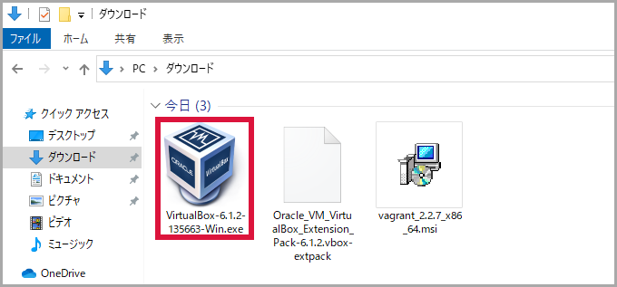2. Next をクリック¶
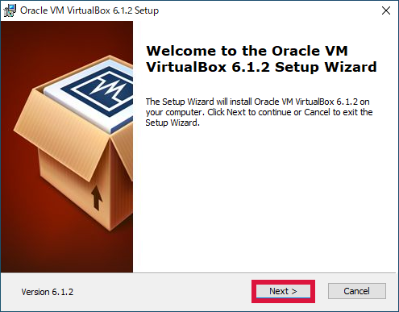3. Next をクリック¶
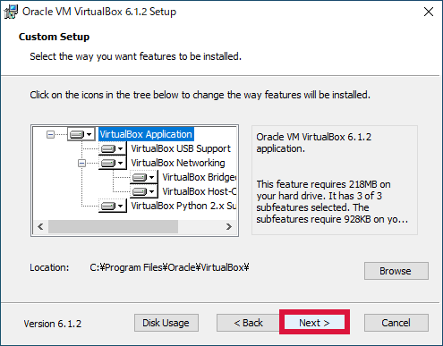4. Next をクリック¶
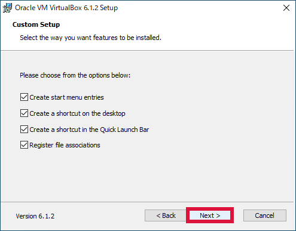5. Yes をクリック¶
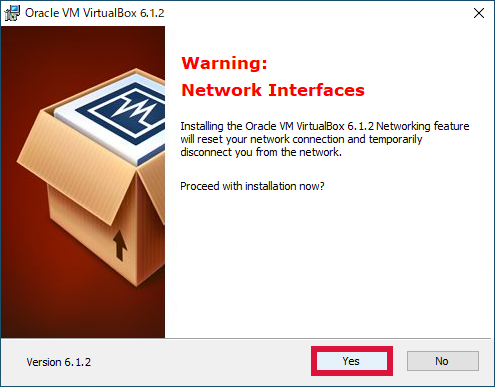6. Install をクリック¶
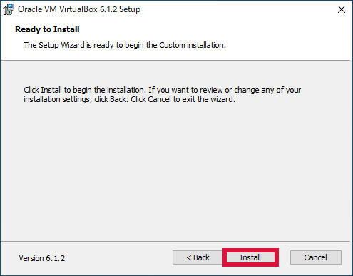7. インストール中¶
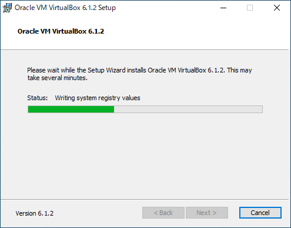8. インストール(I) をクリック¶
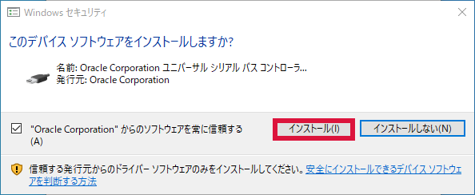9. Finish をクリック¶
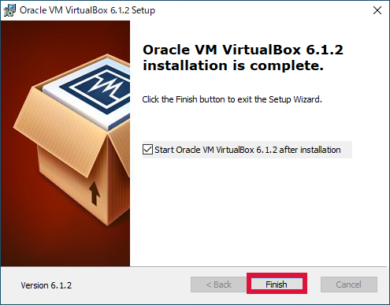10. Oracle VirtualBox のインストールが終了¶

11. ファイル(F) をクリック → 環境設定(P)... をクリック¶
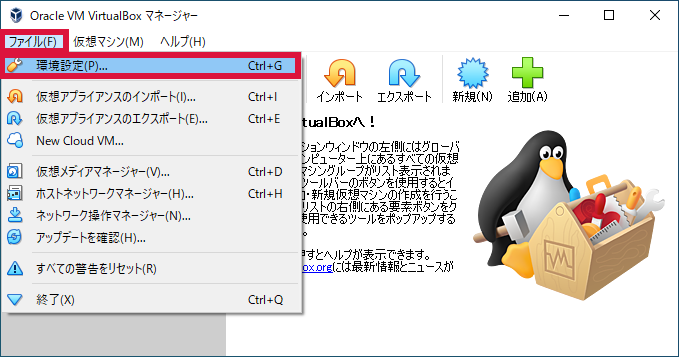
12. 拡張機能 をクリック → ＋ をクリック¶
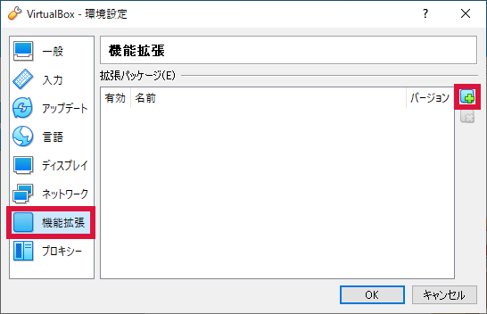
13. Extension Pack を選択 → 開く(O) をクリック¶
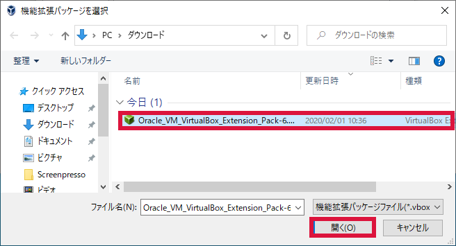14. インストール をクリック¶
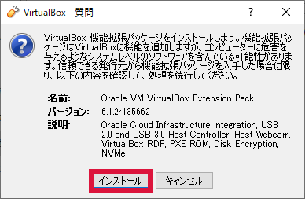15. ライセンス条文を最後までスクロール → 同意します(A) をクリック¶
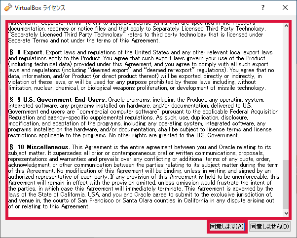16. OK をクリック¶
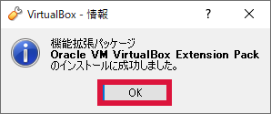17. Extension Pack が追加されたことを確認 → OK をクリック¶
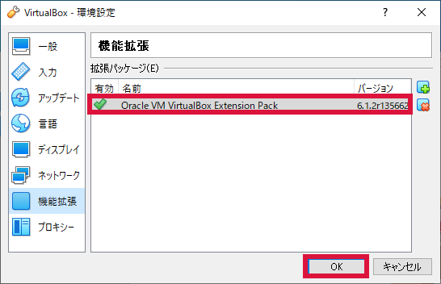18. Extension Pack のインストール終了¶
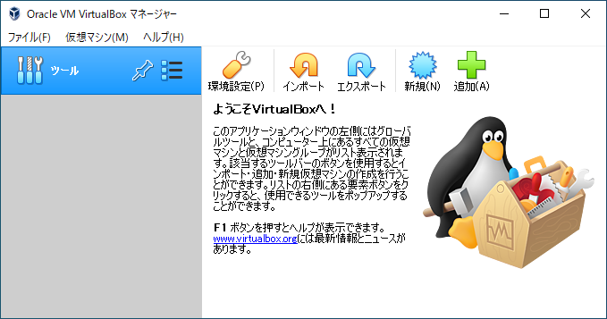Vagrant¶
Vagrant をダンロード・インストールします。
ダウンロード¶
Vagrant のダウンロードページ から
Windows 64-bit をダウンロードします。インストール¶
1. インストールファイルを起動¶
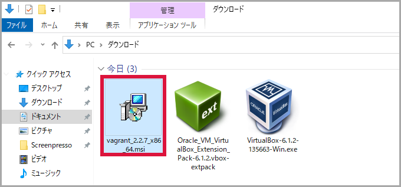2. Next をクリック¶
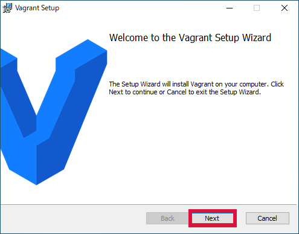3. I accept ・・・ にチェックを入れる → Next をクリック¶
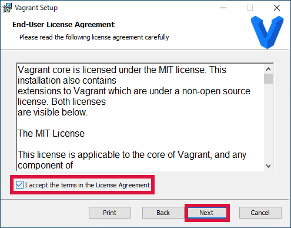
4. Next をクリック¶
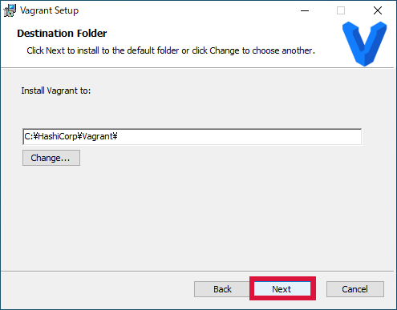5. Install をクリック¶
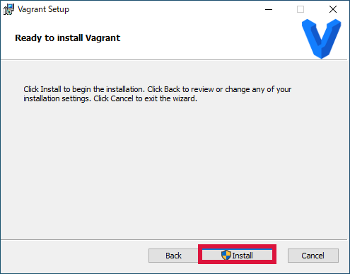6. インストール中¶
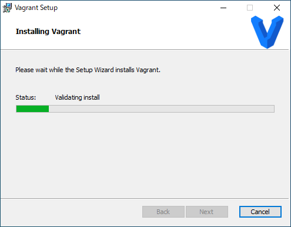7. Finish をクリック¶
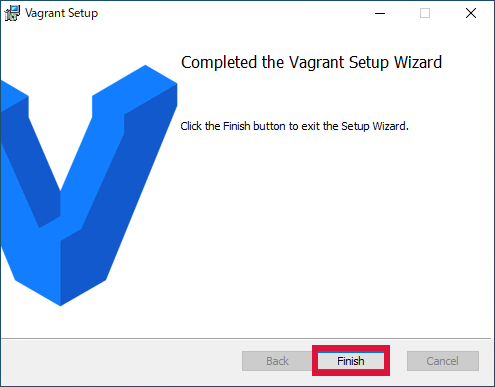8. Yes をクリック¶
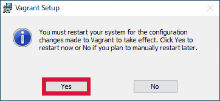9. 再起動 → ログイン¶
10. コマンドプロンプトを起動 → バージョン確認¶
vagrant --version
vagrant -v
PS C:\Users\user> vagrant --version
Vagrant 2.2.7
PS C:\Users\user>
PS C:\Users\user> vagrant -v
Vagrant 2.2.7
PS C:\Users\user>